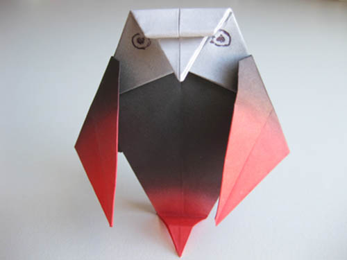
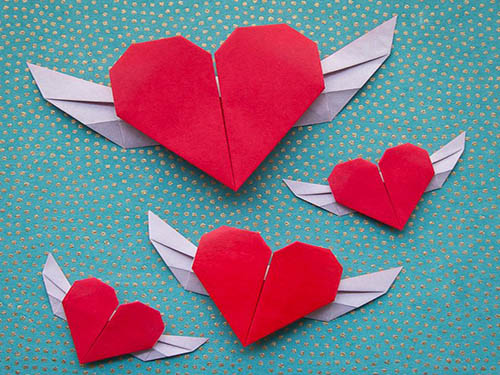

Paper Owl

To overlay a basic origami owl, overlap a square piece of paper in half corner to corner, wrinkle the overlap, and open the paper back up to lay level. Another, bring the cleared out and right corners in approximately midway to the center to make the wings, which can see like little triangles.
Horse Sculpture
Modern craftsmanship celebrates the quality and excellence of the horse in origami fashion. This interesting statue includes a sensational nearness and a metallic brass-like wrap up. Created in strong gum and mounted on a tough base.
Fruit Papier Mache

basic art of paper folding
Flying Hearts

this is another origami fun art which is use specially valentine's day.just make heart with wings. this origami specially for as a gift fo someone.
Fireworks

this origami use for decoration.it is look like some design so this one is atract people in function.
Pinky Rhino
this origami is animal origami.
Rainbow Brolly
These Rainbow Designs are exquisite, colorful and one of a kind. Origami Paper in a Box—Rainbow Designs gives you a assortment of rainbow colored designs and changes them into origami collapsing paper. These paper packs make a awesome asset for all diverse sorts of collapsing, creating, and scrapbooking ventures